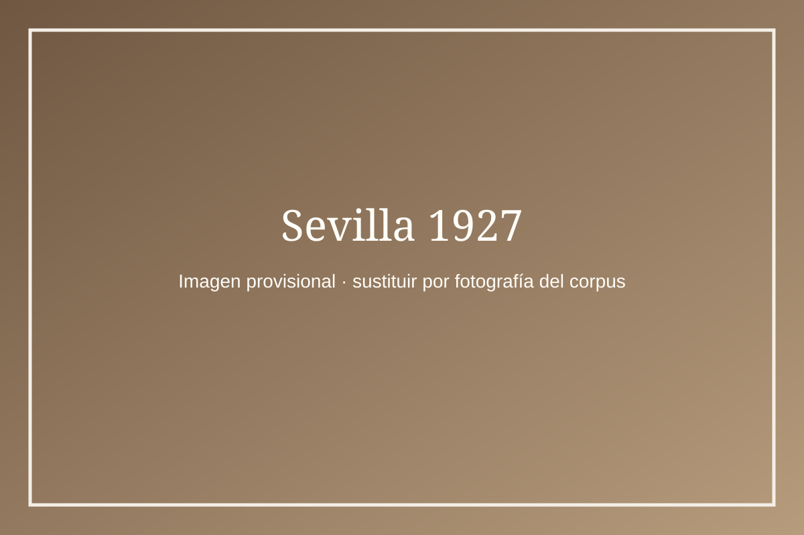
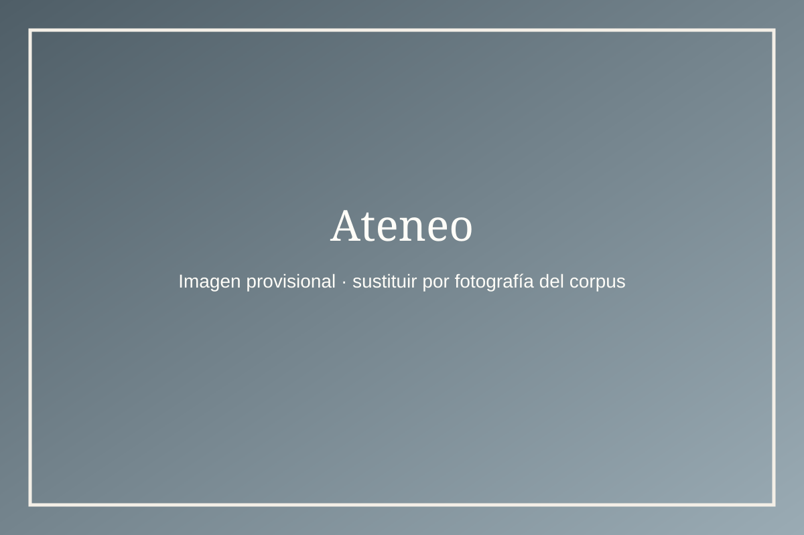
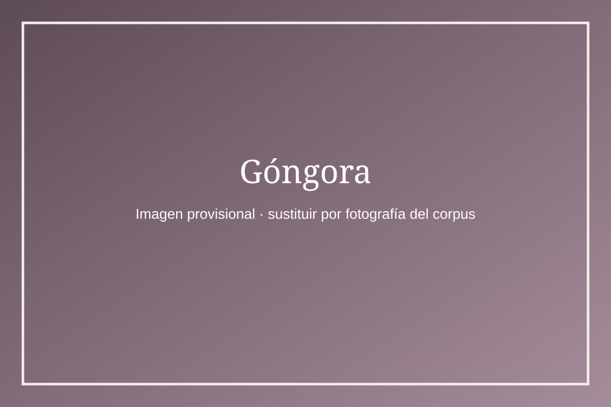
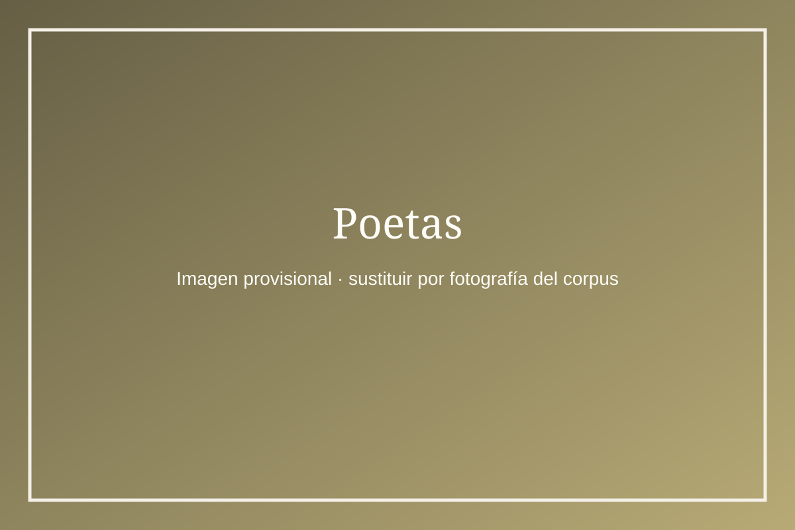
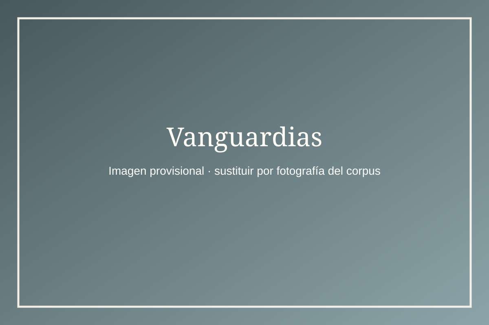
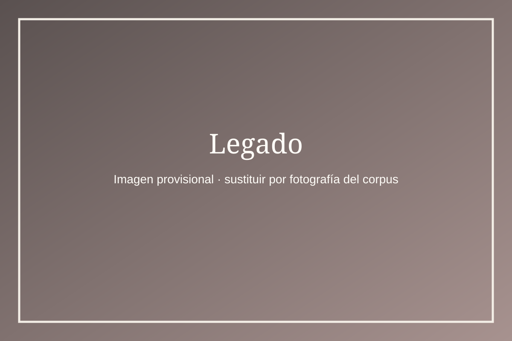

Recuérdalo a otros · Sevilla 2027
Museo
virtual del 27
Un recorrido inmersivo por imágenes, documentos y redes culturales de una generación que desbordó la literatura.
Entrar en la exposición
Actividad paralela al Congreso Internacional sobre la Generación del 27
Museo virtual · Generación del 27
WASD / flechas · arrastra para mirar · clic sobre una obra
×
Ficha museográfica
Título
Información





